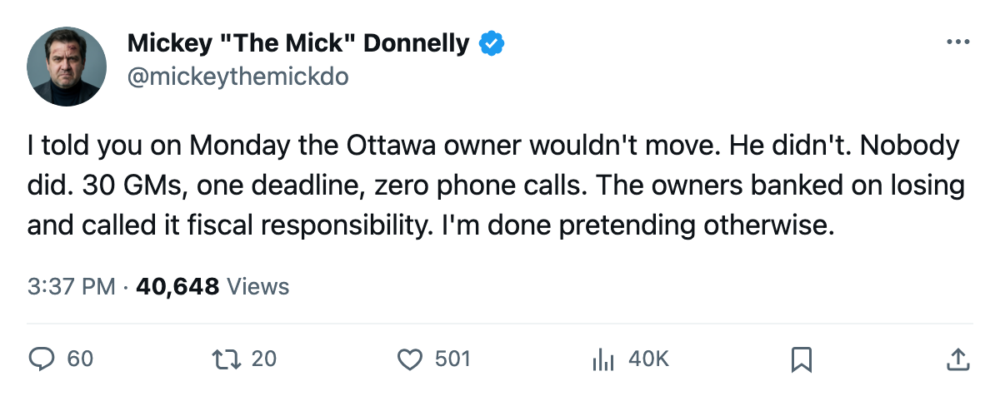
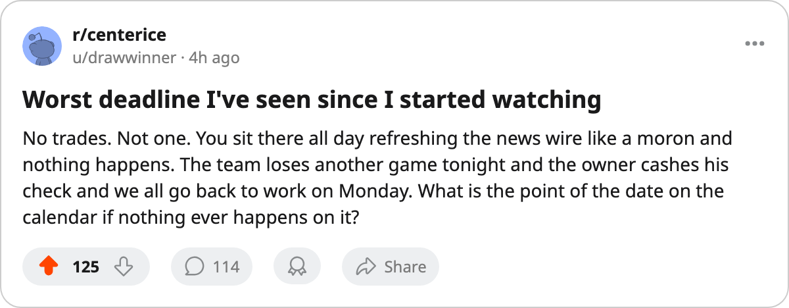

I TOLD YOU SO: 20 WINS, $37.55 MILLION, AND A DEADLINE THAT MEANT NOTHING
The most profitable club in hockey completed a 20-win season without spending a dollar on anyone new. Neither did the other 29.
 Mickey "The Mick" DonnellyColumnist, ex-goalie · The Penalty Box
Mickey "The Mick" DonnellyColumnist, ex-goalie · The Penalty Box
The deadline is today. Not one club in the league moved a player. Two desks, five calls, zero hits.
I told you five days ago that the  Ottawa Senators owner had no reason to move. He didn't. Neither did the 29 other clubs who looked at the same balance sheet and came to the same answer: you don't spend money in March when losing pays better than winning.
Ottawa Senators owner had no reason to move. He didn't. Neither did the 29 other clubs who looked at the same balance sheet and came to the same answer: you don't spend money in March when losing pays better than winning.
 Minnesota Wild banked $37.55 million this season, the highest profit in hockey, on the smallest payroll in hockey at $37.91 million. They won 20 games. They cost $0.58 million per point. They were swept by
Minnesota Wild banked $37.55 million this season, the highest profit in hockey, on the smallest payroll in hockey at $37.91 million. They won 20 games. They cost $0.58 million per point. They were swept by  Vancouver Canucks 0-4-0 (+1 OT) and by
Vancouver Canucks 0-4-0 (+1 OT) and by  Edmonton Oilers 0-3-2, and lost the season series to
Edmonton Oilers 0-3-2, and lost the season series to  Colorado Avalanche 1-4-0. The most profitable organization in this league cannot win a divisional series against anyone except
Colorado Avalanche 1-4-0. The most profitable organization in this league cannot win a divisional series against anyone except  Calgary Flames, who won 23 games and finished last in the Northwest.
Calgary Flames, who won 23 games and finished last in the Northwest.
Pierre-Marc Bouchard77 sits up six on the Bureau's Development Index.  Sebastian Charpentier75 is at 72 morale, tied for the lowest number in the league. The Minnesota Wild locker room averages 90.8, which means nobody is angry enough to force a phone call.
Sebastian Charpentier75 is at 72 morale, tied for the lowest number in the league. The Minnesota Wild locker room averages 90.8, which means nobody is angry enough to force a phone call.
The GM who called it a Tuesday
A man banking $37.55 million does not need a rental defenseman. He does not need to package a first-rounder for a middle-six forward who might get hot in April. He needs to collect the television money, sell 13,610 tickets at $80 a pop, and start over in June.
Chicago ran the same play
 Chicago Blackhawks won 21 games and cleared $26.71 million. They went 11-23 at home, the second-worst mark in hockey. The hot-stove desk called for Daze, Zhamnov, Thibault, or Sullivan in a crate by tonight. All four are in the lineup.
Chicago Blackhawks won 21 games and cleared $26.71 million. They went 11-23 at home, the second-worst mark in hockey. The hot-stove desk called for Daze, Zhamnov, Thibault, or Sullivan in a crate by tonight. All four are in the lineup.
Columbus is the one making me sick
 Columbus Blue Jackets carries a club morale average of 86.0, second-worst of 30. Tyler Wright76 has 108 penalty minutes and morale at 74.
Columbus Blue Jackets carries a club morale average of 86.0, second-worst of 30. Tyler Wright76 has 108 penalty minutes and morale at 74.  Marc Denis86 sits at 72 morale, earns $1.00M, and is a restricted free agent. They banked $15.38 million on a 24-34-6 season. That room does not want to be there. The owner does not care that it doesn't. The deadline passed and nobody picked up a phone.
Marc Denis86 sits at 72 morale, earns $1.00M, and is a restricted free agent. They banked $15.38 million on a 24-34-6 season. That room does not want to be there. The owner does not care that it doesn't. The deadline passed and nobody picked up a phone.
Nobody owes you a try
The owner sees profit, the GM sees a budget that already works, the player sees a contract with no path to a playoff round, and March 19 arrives with no calls made.
Five trade predictions, zero trades, 30 clubs who ran the math and decided that 20 wins and $37.55 million beat a payroll bump and a first-round pick for a man who will wear a different sweater in October.
I called this on Ottawa. Nobody moved. Nobody had to.

